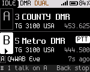

Esta página aún no está traducida; se muestra en inglés.
Scan and Dual Watch
Which radios have scan and dual watch verified is in the Radio reference.
Starting and stopping
| Start | Stop |
|---|---|
| OK, 6 (Tools), 1 (Scan) | Back on Home |
| A side key set to Scan (Settings > Keys) | The same key again |
On a channel the radio scans the current zone ("Scanning this zone"). In the VFO it sweeps the band the VFO frequency is in ("Scanning the band"). The status line shows SCAN, and the channel name changes as the scan moves.
A scan needs at least one other channel to go to. It doesn't run in hotspot mode or while you transmit.
If dual watch is running, starting a scan stops it. The radio stays on the selected channel and scans from there.
How the scan moves
- The scan visits the zone's channels in order, from the one it started on. It skips empty positions and channels the codeplug marks to skip. FM, DMR, P25 and NXDN channels can be mixed. P25 trunked channels are skipped.
- On each channel it listens for 150 ms. An FM channel stops the scan when the squelch opens (with the channel's tone, if it needs one). A DMR, P25 or NXDN channel stops it when the radio plays a call. On a signal it listens up to 1.5 s for a call it would play.
- Turn on digital monitor before you start the scan to stop on a call to any talkgroup, not only the channel's talkgroup and RX group list. It stays on at every channel and on the one the scan ends on. Pressing Monitor on a DMR channel during the scan turns it off or on for the rest of the scan.
- On a signal the scan holds. It moves on 2 s after the signal ends, and stays if the signal comes back.
- Holding Monitor pauses the scan.
While scanning
| Key | Does |
|---|---|
| PTT | Stops on the channel that last held the scan and talks there. While the scan is still searching, it goes back to the start channel and talks there |
| # | Opens the scan actions for the channel that stopped the scan |
| Back | Stops the scan |
| Changing channel, zone or VFO yourself | Ends the scan where you put it |

The scan actions:
| # | Action | Does |
|---|---|---|
| 1 | Skip channel for now | Skips the channel until the scan stops ("Skipped until the scan stops") |
| 2 | Stay here | Stops the scan on this channel |
| 3 | Always skip | Not built yet. Edit scan lists in qdmr |
Dual watch
Dual watch listens on two channels, A and B, and you talk on one of them. Each can be any channel of any zone, or the VFO. It is two frequencies, not the two timeslots of one DMR frequency.
- A is the channel you are on when you start. B is the one you add. The first time, B is the next channel of the zone.
- One of them is selected. PTT talks on it. Up, Down, the knob, the quick settings, the talk target and the menus act on it, as they do on the normal Home, even while the radio is listening to the other channel. Dual watch goes on after you transmit.
- Each channel keeps its changes for now (power, squelch, tones, talk target and the like) while the radio goes back and forth between them.
- The radio has one receiver, so it alternates between A and B. A call on one can be missed while the radio is on the other. A radio with two receivers would hear both and show a call on each channel at once. No radio has that yet (Radio reference).
- A or B can be a P25 or NXDN channel, but not a trunked P25 channel. On a radio with two receivers, the second one doesn't take P25 or NXDN: the radio alternates when the channel not selected is one.
Start it
- Go to the channel you want as A.
- Press *, then 7 (the Dual watch quick tile). The first time, B is the next channel in A's zone (in a zone of one channel: the first channel of the next zone, or the VFO). Later it starts with the last B. Two presses are all it takes. Holding the A/B key does the same.
Home shows both channels, A over B, and "DUAL" in the status strip.
If dual watch is on when you switch the radio off, it starts again when you switch it on. The radio also keeps the last B when you switch it off. It is found again by its channel number: in A's zone first, then in the first zone that holds it. If the channel is gone from the codeplug, B is the next channel again.
If you stop dual watch with B selected, the radio stays on B. The next start watches the same two channels.
Change B
Select B (A/B key, or #, 1) and change its channel the way you do on Home: Up, Down, the knob, digits, Find, Zones, or the VFO key. The same goes for A.
Or press #, 3 (Change B) for the picker. The list shows the channels of the zone you are in, with their frequency and mode. Press a channel's number, type part of its name, or move to it and press OK. The channel you are on is dimmed with "A": it can't be B.

For a channel of another zone, or the VFO, go up to the Zone row and press OK. The list shows VFO first, then the zones. Pick a zone to see its channels, or VFO to watch a VFO frequency.

Read Home

Each channel has a letter, its name, what PTT talks to (the talkgroup, or the frequency on FM), its frequency and its zone. The selected channel has an arrow under its letter.
| You see | It means |
|---|---|
| PTT, a filled letter and an arrow | This is the selected channel: PTT talks here |
| TX (red) and "TALKING on A" | You are transmitting on A |
| RX (green) and "Receiving on B" | A call is coming in on B. The channel shows who is calling, with RX at the right of that line |
| "B Joe Smith TG 91 10s ago" | The last calls, newest first, with their channel |
| "Heard 7s ago" (on the channel) | When the last call on this channel ended, where it fits: amber for the newest call, dim for the other channel |
| Busy (green, on the channel) | The radio is waiting for a reply on the other channel and found a signal here. It is not played yet: the radio goes to it when the wait ends |
| "# 1 talk on B" | A call came in on B in the last 10 s. #, 1 talks back there |
| "# 1 back to A" | Talk back is on and PTT is on B (see below) |
By default a call on the other channel never moves PTT. You choose.
The wait after a call
The radio has one receiver, so it switches between A and B. When a call ends, it stays on that channel for 1 s so it hears the reply. While it waits, it takes short looks at the other channel. A call there shows Busy but doesn't interrupt: when the wait ends, the radio goes to it. Change the wait with Settings > Talk > Dual watch delay (0.5 s to 5 s). Shorter finds the other channel sooner; longer keeps more of a reply that starts late.
Talk back
Turn on Settings > Talk > Dual watch talk back (off by default) and PTT follows the call. When a call ends on the other channel, that channel becomes the selected one ("Talk back on B"), so PTT answers there. The 10 s timer starts over with each reply and each call there. After it, the selection goes back ("Talking on A"). #, 1, the A/B key or Left / Right go back at once. While it is on, the hint row says "# 1 back to A Back stop".

Talk on B
Press #, 1 ("Talk on B"). B is now the selected channel. On a radio with a Left / Right pair, Right selects B and Left selects A. A press of the A/B key switches, and so does any side key set to A/B (Settings > Keys). With dual watch off, the A/B key only says "Turn on dual watch first". Hold PTT to talk. The watch goes on after you let go.

Change A or B
Press # on Home. The actions are:
| # | Action | Does |
|---|---|---|
| 1 | Talk on B (or A) | Selects the other channel |
| 2 | Change A | Opens the picker for A |
| 3 | Change B | Opens the picker for B |
| 4 | Caller | The actions for the last caller (dim until a call was heard) |
| 5 | Stop, stay on A (or B) | Ends dual watch on the selected channel |

A channel can't be both A and B. Changing A or B clears the calls listed for it.
Up / Down and the knob move the selected channel through its zone, skipping the other channel. On the VFO they step the frequency. In a zone with no other channel to go to, the radio says so ("Only one channel in this zone").
A channel you pick in Find, Channels or Zones becomes the selected channel; picking the other channel selects it. The VFO key puts the selected channel on a VFO, and a second press takes it back to its channel. Copy to VFO copies the selected channel into a VFO. A and B each get their own VFO, so both can be VFOs on different frequencies; the radio remembers both. To set a VFO pane's frequency, select it and type the frequency. The digits appear on that pane as you type; Back deletes a digit. Press OK or # to tune. Dual watch continues on the new frequency. With no frequency being typed, # opens the dual watch actions. Hotspot mode and a codeplug write don't stop dual watch.
The zone keys (Previous zone and Next zone) move the selected channel to the previous or next zone, on the zone's first channel that isn't the other one ("A zone: Simplex"). Dual watch goes on. The Home zone key moves it to the first zone. If Up / Down are set to Zone (Settings > Keys), they do the same, and the knob still steps the channel.
Stop it
Press Back twice on Home. The first press says "Press Back again to stop dual watch", so a stray press doesn't stop it. If you entered a frequency or changed a setting for now, Back clears that first. The radio stays on the selected channel ("Dual watch off: on B"). These stop it too: *, 7; holding the A/B key; #, 5; and a side key set to Dual watch. Starting a scan (OK, 6, 1, or the Scan key) stops it, staying on the selected channel. Nothing else stops it. If the radio can't go on with a channel (it was deleted, for example), Home says where the radio is: "Dual watch off: on COUNTY DMR".
Keys
| Key | Does |
|---|---|
| PTT | Talks on the selected channel |
| # | The dual watch actions |
| * | The quick settings of the selected channel |
| Up / Down, the knob | The selected channel moves through its zone (VFO: a step) |
| A/B key (a press, or Settings > Keys), Left / Right | The other channel / A / B. With dual watch off, the A/B key says "Turn on dual watch first" |
| Previous zone, Next zone, Home zone | The selected channel goes to another zone |
| Monitor (held) | Opens the squelch on the selected channel. Dual watch waits there until you let go |
| Dual watch key (Settings > Keys), hold the A/B key | Starts (with the last B) and stops |
| VFO | The selected channel to the VFO, and back |
| Back, twice | Stops, staying on the selected channel |
Starting dual watch stops a zone scan. With Large text on (Settings > Display) Home shows one line per channel, the selected one marked with an arrow.
Design and layouts for every display
The radio core can also scan a VFO range set by two frequencies. There is no menu item for that yet.